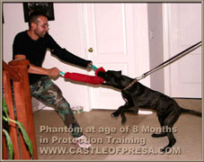
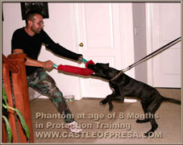

Our Dogs
The oldest and the most famous breeders of the original Perro de Presa Canario were Manuel Curto Gracia and Mr. Juan Carlos Asensio who owned Atlas-Asio kennel. Atlas-Asio kennel doesn't exist anymore but there are some breeders who still have Atlas-Asio blood lines. Our Hercules de Castle of Presa has a very similar look to those old Atlas-Asio Presas, maybe an even better look, and he definitely has the same drive. We are proud that we can recreate the old glory of the original Presas (not "Dogos") with our new Castle of Presa blood lines.
On the left, you can see Mora de Irema Curto from 1990-98. Curto started with dogs like Mora but they don't have this type of Presa anymore. On the right, you can see young Arain de Castle of Presa. He looks very much like Curto's Presas 20 years ago. We are back to where Curto started years ago. We are proud to present Presa beauty at its best. Arain just earned "Best of Breed" and "Best in Show" in Finland.

THE CASTLE OF PRESA DOGS
I have a new fantastic generation of Presas: Andora, Xena, Toro, but I will never forget Panthera, Tarzana and Hercules. I have trained many dogs since 1972, but those three were the best dogs I've ever had. They were every trainer's dream. Usually you repeat a new trick about 50-80 times during several months to make it stick. Well, I showed "Stay" to Panthera and Tarzana 3 times and it became permanent. Anytime I said stay, they knew what I want from them and they did it right without any correction. It took me about the same amount of time to teach those three dogs "Jump" over an 8 foot wide wash (ditch). Anytime I pointed my finger to the ditch and said jump, they jumped over. It was so much fun to train these dogs.
Presa dogs don't do well if they are in their kennel full-time. They want to be part of the family and they need a lot of love.
Andora is a large, strong, dominant female with a very high drive and great defensive drive. We imported Andora from Europe. She is 50% Curto after her mother Donna de Irema Curto. Andora is playful, has a stable, balanced temperament, and shows defensive properties when it comes to defending her territory. We value Andora for her high protection abilities and her high drive. She has so much energy. She can run all day long and doesn't get tired. Andora had a few fantastic litters and she was excellent mother. She is retired from breeding and is with her daughter Xena my personal house dog and protector.

ANDORA-DORA is C.O.P
Highly Protection Trained Dog
Born: June 8, 2013
Height in withers: 25inch/ 63.5cm
Weight: 115 lbs/ 52 kg
Temperament: Stable, balanced
Working abilities: Excellent, natural protector
Hips: Excellent, X-Ray is available


XENA de Castle of Presa The best of the best. Pride of my breeding. Xena is large, strong, very muscular female. When my personal dogs Tarzana and Hercules passed away, Xena immediately became my personal dog. She is always with me. Xena is the first dog to sleep in my bed with me. My other favorite dogs always slept next to my bed. Xena is as tough of a protector as her father, Hercules. She is a very powerful dog. She is still in protection training but her hard bite is already devastating. There is only one out of million Presas like Xena. She is highly intelligent. With her beautiful shiny coat, her beauty is breath stopping. She is confident, with a stable, balanced temperament, and very affectionate, obedient, and protective. Xena can be a very mean bitch when it comes to protection. She doesn't even like cars passing by my property. If there wouldn't be a fence in between, she would attack the car. But when I call her up, she is immediately in the of me. If I leave her in my car, nobody can get even close to it. And I didn't even train her to guard my car yet.

Xena de Castle of Presa
Born: September 28, 2016
Height in withers: 25inch/ 63.5cm
Weight: 115 lbs/ 52 kg
Temperament: Stable, balanced
Working abilities: Natural protector
Hips: Excellent, X-Ray is available
Toro de Castle of Presa Toro-Torez is my boy. I just love this boy. Presas like Toro get born only once in 100 years. He is large and strong like a bull with a huge head. However, even more impressive is his temperament. He is very loving, always trying to please me, very obedient, and learns fast. Toro is a natural guard dog and protector. He has so much power. He can turn a 6', 300 lbs man down. His bite crushes the bones. Toro is now in protection training. He will be as tough as Hercules.
Toro de Castle of Presa
Born: September 28, 2016
Height in withers: 25inch/ 63.5cm
Weight: 115 lbs/ 52 kg
Temperament: Stable, balanced
Working abilities: Natural protector
Hips: Excellent, X-Ray is available
OUR STUDS ARE AVAILABLE FOR STUD SERVICE
available for approved females
Toro is a young stud with a huge head and fantastic loving and stable temperament
We will ship chilled or frozen semen anywhere in the world, so now you can breed your Presa female and have a puppies no matter where you live.
Tarzana de Castle of Presa Tarzana de Castle of Presa Tarzana was my personal dog. I would never have sold her for any price. She won my heart because of her high qualities. She was highly intelligent, extremely obedient, always trying to please me, and a very hard protection dog. She was always with me. She slept next to my bed and she stayed with me to the end. I miss her. Rest in peace my girl.
Tarzana de Castle of Presa
Born: July 29, 2008
Height in withers: 26inch/ 66cm
Weight: 120Lbs/ 54kg
Temperament: Stable, balanced
Working abilities: Natural protector
Hips: Excellent, X-Ray
Left: Tarzana 8 months, first time on the sleeve Right: Tarzana at 5 weeks old
Hercules de Castle of Presa Hercules was my second personal dog. He is Tarzana's brother and the son of Electra. Hercules was the best male Presa I ever had in my life. He had a stable, balanced temperament as well as a strong defensive drive. His hard, full-grip bite was devastating. He could get very aggressive but just one nice word calmed him down immediately. Hercules was a one of a kind Presa. He was protection trained by me with many extras. He stayed with me to the end and passed away in my home. Rest in peace my boy. Fortunately, I have his daughter Xena who immediately became my personal dog and protector. And hell yeah, she is as tough as her father.
Stud Hercules is a C.O.P.
Protection Trained Dog
Born: July 29, 2008
Height in withers: 27inch/ 68.5cm
Weight: 125Lbs/ 56.5kg
Temperament: Stable, balanced
Working abilities: Natural protector
Hips: Excellent, X-Ray is available

Left to Right: Hercules 3.5 years old
Left to Right: Hercules 1.5 years, Hercules 8 months, Hercules 4 months: a little teddy bear
Phantom Phantom was imported from an original breeder from the Canary Islands. He was intelligent, calm, and loaded with energy. Even though I raised him since he was a puppy, I never had any bond with him. He liked to be by himself. However, he stayed with me to the end and passed away on my property.
August 27, 2007 - October 15, 2017
Phantom
Born: August 27, 2007
Height in withers: 26inch/ 66cm
Temperament: Stable, balanced
Working abilities: Natural protector
Hips: Very good, X-Ray is available
Sire: Aruba
Dam: Perla
Registered: View pedigree
Left: Phantom 4.5 years old Middle: Phantom 2 years old
 

Left&Middle: Phantom 9 months Right: Phantom 4 mmonths
Panthera de Castle of Presa was beautiful. Unfortunately, Panthera was sold to the wrong man and due to his negligence she died too soon. I am so sorry baby for making the wrong decision. You should have stayed with me. I loved this dog. Rest in peace my girl.
July 29, 2008 - Sep 9. 2014
Panthera de Castle of Presa
Born: July 29, 2008
Height in withers: 26inch/ 66cm
Weight: 120Lbs/ 54kg
Temperament: Stable, balanced
Working abilities: Natural protector
Hips: Excellent, X-Ray
Left: Pic 2011
Left: Panthera 8 months Right: Panthera 5 mmonths
Electra was one of the best examples of the real Perro de Presa Canario. We imported her directly from the Canary Islands. She became the foundation for our breeding program. Electra was 120 Lbs, heavy boned with large chest, a big head, muscular body and a beautiful brindle coat. She was a real protector and real “Gripper” with a full-grip bite. Electra came from an old Curto Presa working line. Electra retired in Florida. We don't know what year she passed away.
Electra
Born: May 2, 2003
Height in withers: 24inch/ 61cm
Weight: 120Lbs/ 54kg
Temperament: Stable, balanced
Working abilities: Natural protector
Sire: Vento
Dam: Ines
Registered: View pedigree